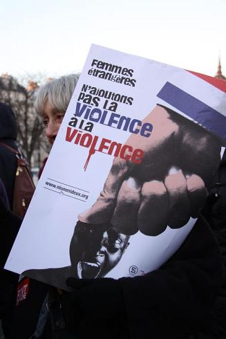
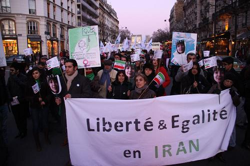
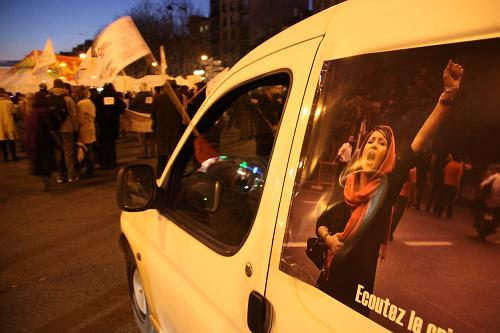
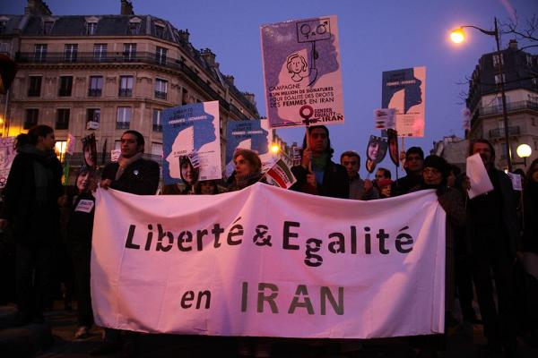
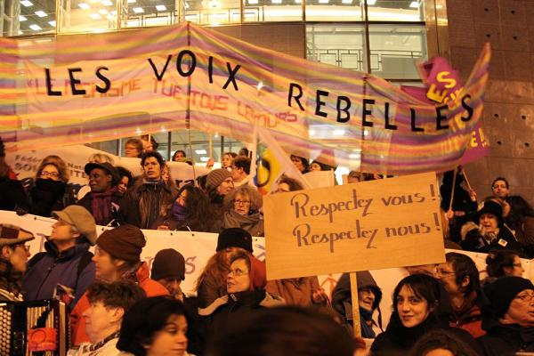
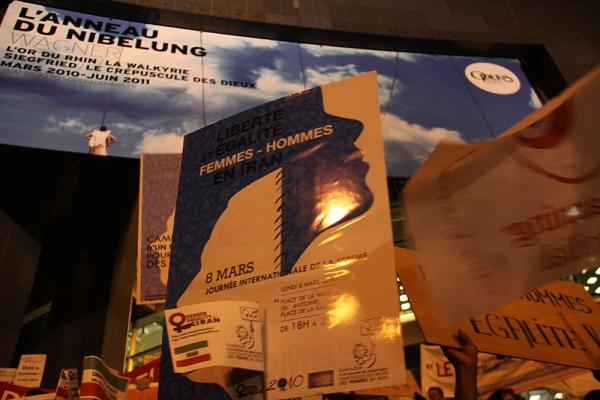
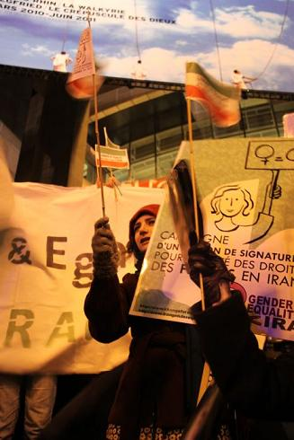
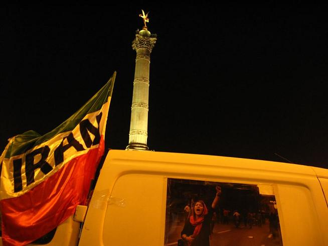

|
|

براي برابري و آزادي جنسيتي در ايران
گزارش کمپین پاریس از راهپيمايي روز جهاني زن در پاریس
شنبه22 اسفند 1388
تغییر برای برابری - هشتم مارس امسال براي فعالين زنان در فرانسه متفاوت از سالهاي گذشته برگزار شد، چرا که امسال صدمين سالگرد روز جهاني زن و چهلمين سالگرد جنبش آزادي خواهي زنان فرانسه (MLF) نيز بود. از سال ۱۹۱۰ که "کلارا زتکين" و "رزا لوکزامبورگ" در اولين کنفرانس بين المللي زنان در کپنهاگ، براي اولين بار ايده ي گردهم آيي جهاني سالانه ي زنان براي دستيابي به حقوق برابر را مطرح کردند، هر ساله زنان و مردان برابري خواه روز هشتم مارس در کشورهاي مختلف کنار هم مي ايستند و بار ديگر بر خواسته هاي خود تاکيد مي کنند. هشتم مارس زماني براي گفت و گو و نمايش فعاليت ها و دستاوردهاي حوزه ي زنان براي دستيابي به برابري و حقوق بشر و تاکيد بر مطالبات زنان است.

با وجود همه ي پيشرفت هايي که حقوق زنان در اين سالها داشته است همچنان در بسياري از حوزه هاي مدني-حقوقي تبعيض بر زنان وجود دارد. در فرانسه آنچه بيش از همه در مراسم هشت مارس ۲۰۱۰ به چشم مي خورد پلاکاردهاي ضد خشونت بر زنان بود.طبق آمار سال 2008، در فرانسه هر روز 137 زن مورد خشونت قرار مي گيرند. فعالين حوزه ي زنان در فرانسه همچنين براي دستيابي به فرصت هاي شغلي برابر، درآمد يکسان براي کار يکسان، و تساوي حضور زنان و مردان در عرصه هاي اجتماعي و سياسي تلاش مي کنند. برگزار کنندگان اين راهپيمايي، اتحاديه ي ملي براي دفاع از حفوق زنان (CNDF) و راهپيمايي جهاني زنان(MMF)، امسال نگاه ويژه اي بر وضعيت زنان در ساير کشور ها داشتند و بخشي از فعاليت ها را به بخش بين الملل اختصاص دادند. بنابراين زنان مهاجر و پناهنده نيز نقش پررنگي در تظاهرات هشتم مارس داشتند. با توجه به فراخوان براي آزادي و برابري جنسيتي در ايران، که در فرانسه توسط فعالين کمپين پيگيري شد، همچنين وضعيت ويژه ي ايران، امسال برنامه های متعددی به مبارزه ي ايرانيان براي رسيدن به آزادي و برابري جنسيتي اختصاص يافت.

فعالين کمپين نيز مانند سالهاي گذشته در راهپيمايي روز جهاني زن شرکت کردند. بيش از صد و بيست نفر از ايرانيان به دعوت کمپين يک مليون امضاي پاريس در راهپيمايي که از ميدان ناسيون تا ميدان باستيل برگزار شد حضور داشتند و در طول مسير با پرچم هاي سه رنگ ايران، پلاکاردها و شعارهاي برابري خواهانه، در خيابان هاي پاريس همگام با همه ي فعالين زنان در سراسر دنيا خواستار تغيير قوانين تبعيض آميز و توجه به مطالبات زنان ايراني شدند.

کمپین پاریس بيش از يک ماه است که در فراخواني براي آزادي و برابري جنسيتي در ايران از همه ي مدافعان حقوق زنان، سازمان ها و شبکه هاي زنان دعوت کرده تا در همبستگي با مبارزات حق طلبانه زنان در سراسر دنيا براي پايان دادن به خشونت و سرکوب در ايران، آزادي فوري بازداشت شدگان، حمايت از جنبش زنان و جنبش مدني در ايران وارد عمل شوند. در طول مسير راهپيمايي متن اين فراخوان به دو زبان فارسي و فرانسه خوانده مي شد. همچنين نزديک به دويست تراکت از بيانيه ي هشتم مارس و متن فراخوان بين شرکت کنندگان غير ايراني در راهپيمايي پخش شد. بيانيه با اشاره به گسترش روزافزون مبارزات دموکراسي خواهي مردم ايران پس از برگزاري دهمين دوره انتخابات رياست جمهوري ايران، سرکوب خشونت آميز جنبش مردمي، اعمال خشونت هاي رواني و فيزيکي، بازداشت، شکنجه، تجاوز و صدور و اجراي حکم هاي سنگين از زندان تا اعدام را محکوم مي نمايد.

از آغاز جنبش مردمي پس از انتخابات دهها زن، اعم از فعالين جنبش زنان، جنبش سبز، جنبش دانشجويي، جنبش کارگري و فعالين مدني و سياسي بازداشت شده و حکم هاي سنگين دريافت کرده اند. نقش جنبش برابري خواه زنان در شکل گيري جنبش مردمي از خرداد ماه تا به امروز غيرقابل انکار است. و جنبش زنان از پايه هاي اعتراضات مردمي پس از انتخابات است. با اين حال همراه با گسترش دستگيري زنان فعال در جنبش سراسري و به ويژه فعالين حوزه ي زنان، نه تنها به سمت برابري در حقوق حرکت نمي کنيم بلکه شاهد طرح تصويب لوايح قانوني مروج تبعيض جنسيتي، همچون لايحه ي حمايت از خانواده هستيم. به همين دليل در کنار بيانيه ي فرانسوي، متن فارسي کوتاهي براي آگاه سازي ايرانيان حاضر در راهپيمايي نسبت به لوايح تبعيض آميز و درخواست براي حمايت از فراخوان در بين فارسي زبانان پخش شد.

در بخشي از مسير راهپيمايي خانم "شکريه حيدر" مدير انجمن نگار براي حمايت از زنان افغان براي شرکت کنندگان صحبت کردند و با اشاره به کنفرانس لندن و افزايش حضور طالبان در قدرت و احتمال وارد شدن مواد تبعيض آميز و ضد زن به قانون اساسي از فعالين ايراني خواستند تا در کنار هم زبانان افغان خود بايستند.
در پايان راهپيمايي، همه ي شرکت کنندگان روي پله هاي اپراي معروف باستيل جمع شدند و بيانيه ي هشتم مارس خوانده شد. يکي از فعالين کمپين پس از بيانيه ي مشترک، خلاصه اي از فراخوان براي آزادي و برابري جنسيتي در ايران را خواند و همچنين از "سيمين بهبهاني" ياد کرد که قرار بود براي برنامه اي به دعوت شهرداري پاريس به فرانسه بيايد اما به دليل توقيف گذرنامه اش در فرودگاه نمي تواند در اين مراسم شرکت کند.
ما ديروز در کنار جامعه ي مدني فرانسه سرود کمپين را خوانديم و براي برابري جنسيتي در ايران فرياد زديم تا بار ديگر توجه افکار عمومي جهان و رسانه ها را به آنچه در ايران مي گذرد جلب کنيم و سهمي داشته باشيم در رسيدن به روزي که زن ايراني با مرد ايراني برابر باشد.



